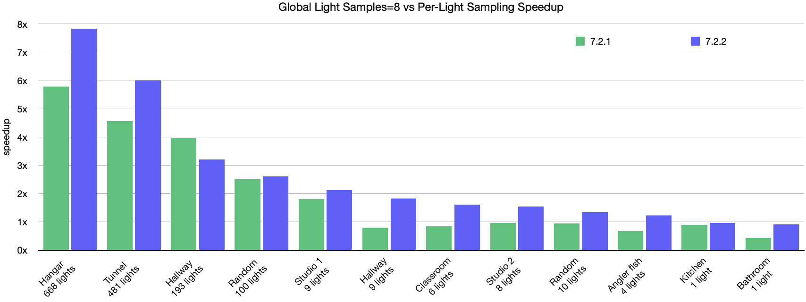

Improved interactivity when modifying large scenes: Arnold 7.2.2 improves the responsiveness of the renderer when modifying large scenes interactively. When editing lights or shaders in scenes with millions of instances, the time to first pixel is nearly instantaneous instead of having to wait multiple seconds. For example, this change improves interactivity greatly when rendering scenes using the point instancer in USD. Modifying nodes during an interactive session now usually results in an update of just the modified node, not of all nodes. In scenes with many nodes, this can substantially speed up interactive node updates. In case of missing updates, you can disable this feature by setting options.enable_fast_ipr to false. An Arnold cache flush can also be used to trigger all nodes to update again. (ARNOLD-4873)
Improved global light sampling performance: The efficiency of global light sampling with indirect lighting has been improved in many cases. See the global light sampling documentation for more details. (ARNOLD-13381)

Reduced numerical precision differences across CPU vendors: While images rendered on Intel, AMD, and Apple CPUs were already often perceptually equivalent, we have removed more precision-related differences so that even more results are now perceptually identical. (ARNOLD-5211)
Reduced noise from mesh lights in volumes: The amount of noise in volumes when using a mesh light with very small triangles is now much reduced. (ARNOLD-11880)
7.2.1.1
7.2.2
Specify which AOV to show in kick display: A new kick flag -aov selects the AOV to show in the kick display window. (ARNOLD-13360)
OCIO color manager handles better missing configs: If the OCIO color_manager is not given a config filename and the OCIO environment variable is not defined, Arnold will now use the builtin config. Previously it would fail with a warning and not apply any color conversions. (ARNOLD-11565)
Per shape autobump SSS visibility: You can now control whether autobump is visible on SSS for specific shapes, instead of relying on the global control, just as you can for the other autobump visibility controls. This setting has subtle effects and can increase rendering times, so enabling it only where it matters will help optimize scenes. (ARNOLD-12989)
Update CER: The Customer Error Reporting (CER) library is updated to v6.2.3. (ARNOLD-13510)
USD Enhancements
Load 3rd party MaterialX node definitions: It is now possible to render MaterialX nodes defined in third-party node definitions using the ARNOLD_MATERIALX_NODE_DEFINITIONS environment variable. (ARNOLD-13398)
Estimated render time in the Render Delegate: Add Arnold render status and estimated render time to viewport annotation. usd#1492 -
Camera filters: Add support for camera filtermap and uv_remap. usd#1499
Deterministic USD prototype names: This change forces USD to generate non-random prototype names for instances when using the USD_ASSIGN_PROTOTYPES_DETERMINISTICALLY environment variable. This addresses frame stability issues when using Cryptomatte. (ARNOLD-13349)
Material scope: Add a Mtl scope for materials when authoring usd file. usd#1486
Subsurface ray visibility: Add AI_RAY_SUBSURFACE visibility flag support in the render delegate and procedural. usd#1529
API Additions
AiMallocUsableSize(): AiMallocUsableSize() returns how much memory a pointer returned by AiMalloc() is using. This is helpful when paired with AiAddMemUsage() for tracking memory allocation and deallocations. (ARNOLD-13354)
Per-object subsurface autobump visibility: The per-object autobump_visibility flag AI_RAY_SUBSURFACE now toggles the appearance of autobump normal perturbations in subsurface scattering effects. (ARNOLD-12989)
Support ARNOLD_MATERIALX_NODE_DEFINITIONS in AiMaterialxGetOslShaderCode: The AiMaterialxGetOslShaderCode function will now respect the value of the ARNOLD_MATERIALX_NODE_DEFINITIONS environment variable, and also supports an optional MATERIALX_SEARCH_PATH argument to load 3rd part MaterialX node definitions. (ARNOLD-13398)
Forcing node updates: To force a specific AtNode type to be always updated, you can set the boolean metadata force_update to true on the node : AiMetaDataSetBool(node_entry, nullptr, "force_update", true); (ARNOLD-4873)
Incompatible changes
Deprecated sss_use_autobump: The sss_use_autobump global option is now deprecated in favor of the per-object autobump_visibility flag. While the global option still works, it now prints a warning when used, and will eventually be removed. (ARNOLD-12989)
Bug Fixes
MTOA-1362 Export to USD with parent scope duplicates namespace
MTOA-1396 aiSetParameter.enableAssignment set to a default value ignored during batch renders
MTOA-1415 Node initialization for instancer takes forever in Arnold RenderView
ARNOLD-11789 - AiAOVSampleIteratorGetInvDensity for non-adaptive renders was always 1
ARNOLD-11880 - Bright pixel artifacts in atmosphere_volume when using a mesh light with very small triangles
ARNOLD-11888 - OIDN doesn't work if noice denoising AOVs are also output
ARNOLD-11900 - AOV samples memory stats report negative value and large unaccounted memory
ARNOLD-12774 - Support multipart scanline EXRs
ARNOLD-13346 - Set_transform in append mode only considers the first matrix key
ARNOLD-13376 - Crash when modifying a mesh referenced by an instancer node
ARNOLD-13460 - Strip _forced_box_filter from .ass export
ARNOLD-13463 - UDIM tiles greater than 1009 do not render with MaterialX image nodes
ARNOLD-13495 - Hang when reading corrupt .ass file
ARNOLD-13511 - RLM_DEBUG env var prints weird characters
ARNOLD-13512 - Incorrect values in Arnold MaterialX Node Definitions
ARNOLD-13523 - Fix slowdown when using big arrays of nodes with the dependency graph enabled
ARNOLD-13539 - Log messages from AiScene API incorrectly reference "[ass]" when .ass file are not used
ARNOLD-13550 - Quad light sometimes produces NaN artifacts
usd#1502 - Render delegate crashes with empty arrays
usd#1522 - Support UsdPrimvarReader_float2 shader returning the st variable
usd#1530 - Fix a crash when a user primvars has an empty array on a keyframe
System Requirements
Maya 2022, 2023 or 2024
Windows 10 or later, with the Visual Studio 2019 redistributable.
Linux with at least glibc 2.17 and libstdc++ 4.8.5 (gcc 4.8.5). This is equivalent to RHEL/CentOS 7.
x86-64 CPUs need to support the SSE4.1 instruction set.
macOS 10.13 or later, macOS 11 and later for Maya 2024
Apple Mac models with M series chips:
Natively supported by Arnold for Maya 2024
Supported under Rosetta 2 mode for older versions of Maya
GPU rendering works on Windows and Linux only and requires an NVIDIA GPU of the Ada, Ampere, Turing, Volta, Pascal, or Maxwell architecture. We recommend using the 525.89 or higher drivers on Linux and 528.49, or higher on Windows. See Arnold GPU for more information.
For GPU rendering, the cache also needs to be re-populated after installing a new Arnold version, updating to a new NVIDIA driver, or changing the hardware configuration of GPUs on the system. More information can be found here.